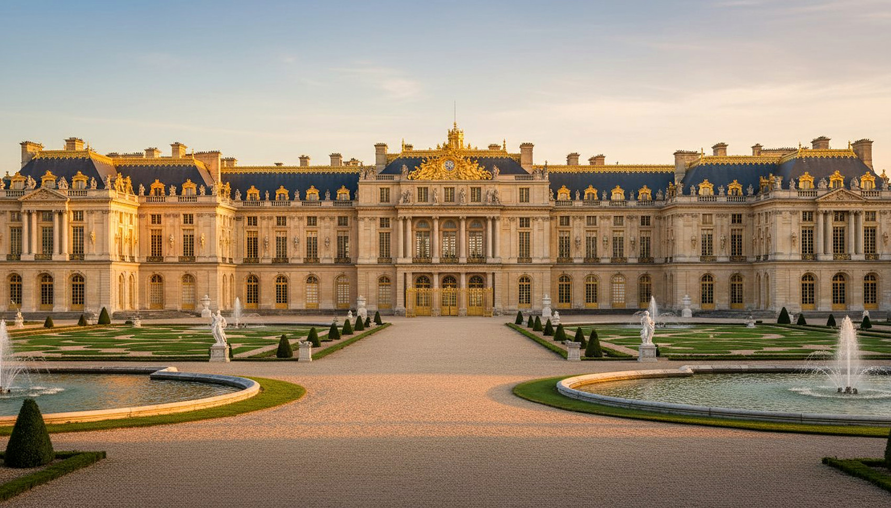
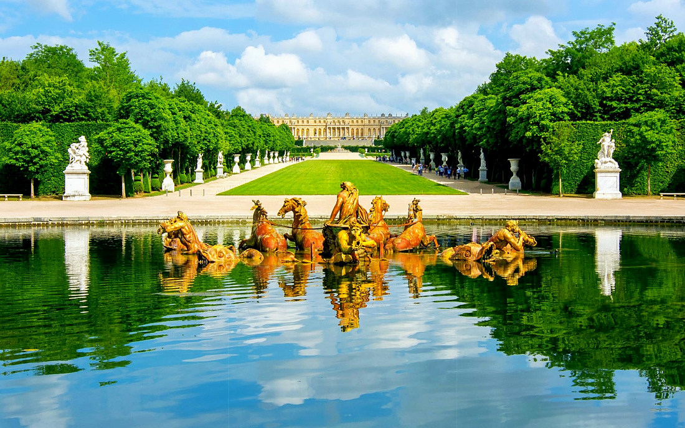
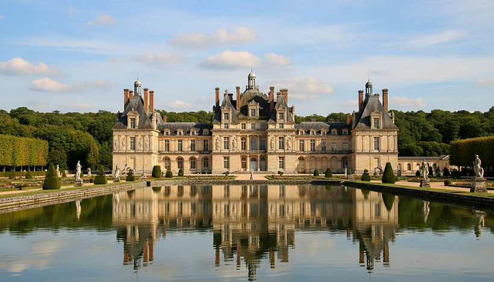
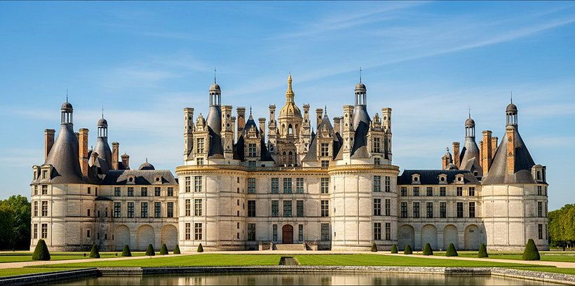
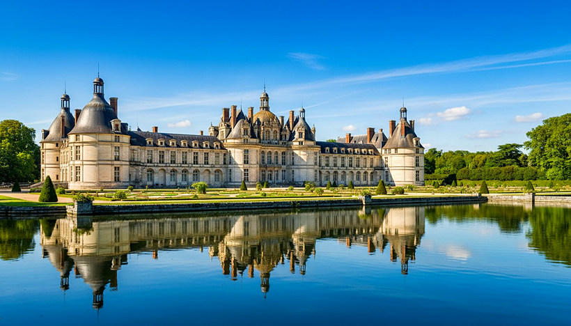

 Pack Loisir & Visite
Pack Loisir & Visite
Une journée d'exception au fil des plus beaux châteaux d'Île-de-France et au-delà, avec votre chauffeur privé qui vous accompagne et vous attend.
Une formule clé en main : vous choisissez le ou les châteaux, on s'occupe de tout — transport, billets et logistique.
Berline Premium, Éco Green Hybride ou Van Mercedes Classe V selon le nombre de passagers et de bagages.
Prise en charge directement devant votre hôtel (ou adresse de votre choix) pour rejoindre le château.
Sélectionnez le ou les châteaux à visiter — les billets d'entrée sont inclus dans le pack.
En fin de visite, votre chauffeur vous récupère et vous raccompagne à votre hôtel.
Vous choisissez l'heure de départ et de retour : on s'adapte à votre rythme.
Une bouteille d'eau fraîche offerte à chaque passager à bord du véhicule.
Choisissez une ou plusieurs destinations pour votre journée. Votre chauffeur reste à disposition entre les visites.
Le palais, la galerie des Glaces et les jardins de Le Nôtre — l'incontournable.
La résidence des rois de France, au cœur de sa forêt légendaire.
Le chef-d'œuvre baroque qui inspira Versailles, élégant et intimiste.
Château, musée Condé et grandes écuries — art et patrimoine équestre.
Chambord, Chenonceau… journée complète sur demande (devis sur-mesure).
La plus vaste forteresse royale d'Europe, son donjon et sa Sainte-Chapelle.
Mise à disposition à la journée, horaires flexibles, eau offerte à bord.
Les billets d'entrée peuvent être inclus sur demande. Tarif établi sur devis selon la distance et la durée.




Le transport privé aller-retour est inclus dans le pack. Les horaires et indications de prise en charge vous sont communiqués lors de la réservation, ou sur demande par e-mail pour plus d'informations.
Cliquez sur un château pour dérouler ses jours d'ouverture, horaires et particularités. À titre indicatif — vérifiez toujours avant votre visite.
Votre chauffeur vous accueille à l'hôtel à l'heure convenue.
Trajet confortable et direct, bouteille d'eau offerte à bord.
Vos billets d'entrée vous attendent — profitez de la visite à votre rythme.
Votre chauffeur vous raccompagne à l'hôtel à l'heure de votre choix.
Choisissez votre pack château dans « Services Pack », ou demandez un programme 100 % sur-mesure avec le Pack Spécial Devis.
Continuer ma réservationVotre réservation en cours sur le site est conservée.